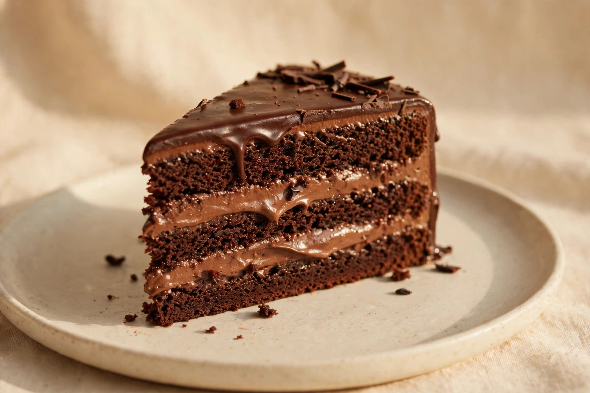
Hausrezept
Schokotorte
Dunkle Edelschokolade, samtige Creme & zarter Biskuit.
Demo-Bild — KI-generiert
[PREIS] €Vorbestellen →
★ 5,0 auf Google (50 Bewertungen, laut eigener Website)
Hausgemachte Torten & frischer Barista-Kaffee in Gera — kreiert nach meisterhaften Rezepten von Dariia & Nataliia. Jetzt bequem online vorbestellen.
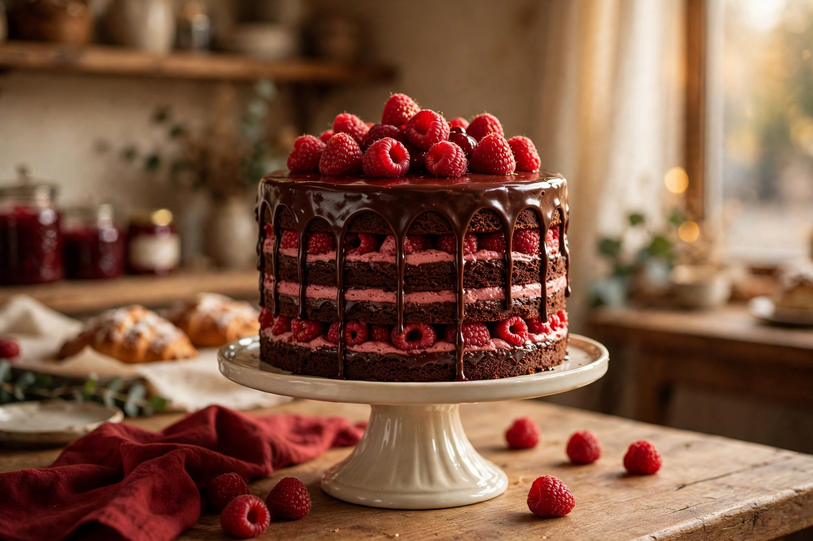
Dunkle Schokolade trifft frische Himbeere — unsere beliebteste Kombination.
Demo-Bild — KI-generiert
Frisch gebacken am Abholtag — online in drei Schritten bestellt.
Torte konfigurieren →Bis zu 30 Personen — für Firmenfeiern, Geburtstage und Familienfeste.
Event anfragen →Frischer Espresso & mehr — Siebträger, hausgemacht, mit Liebe serviert.
Menü ansehen →Aus unserer Backstube
Jede Torte wird von Dariia & Nataliia nach eigenen Familien- und Meisterrezepten von Grund auf neu gebacken — frisch, hausgemacht und mit viel Liebe zum Detail.
Preise: [PREIS] € — die echten Preise erfragen Sie bitte im Café. Alle Fotos sind Demo-Bilder (KI-generiert).

Dunkle Edelschokolade, samtige Creme & zarter Biskuit.
Demo-Bild — KI-generiert
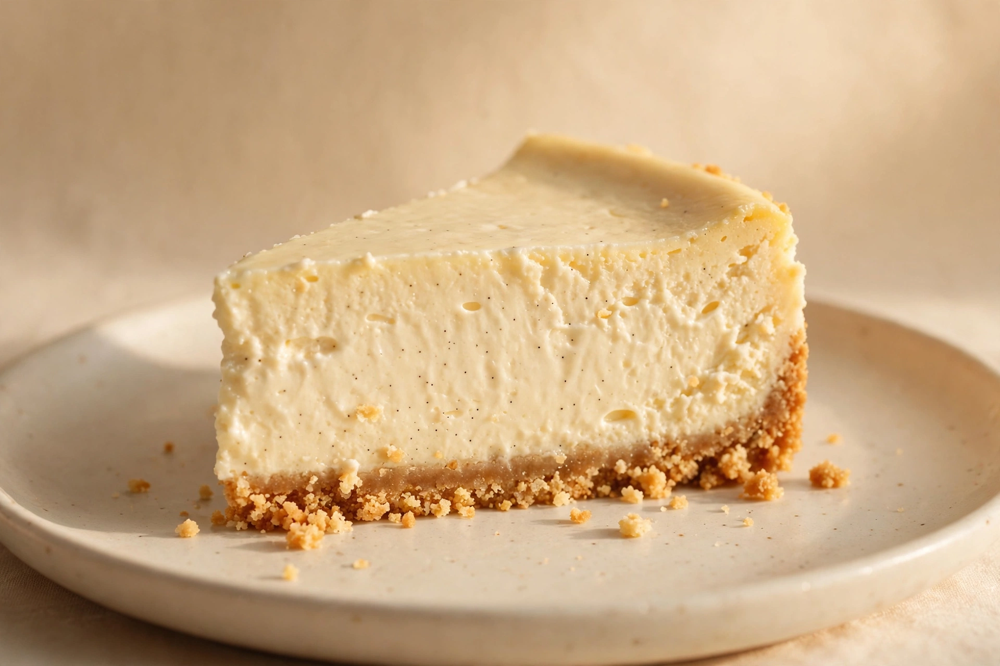
Cremiger Frischkäse, feine Vanille & knuspriger Keksboden.
Demo-Bild — KI-generiert
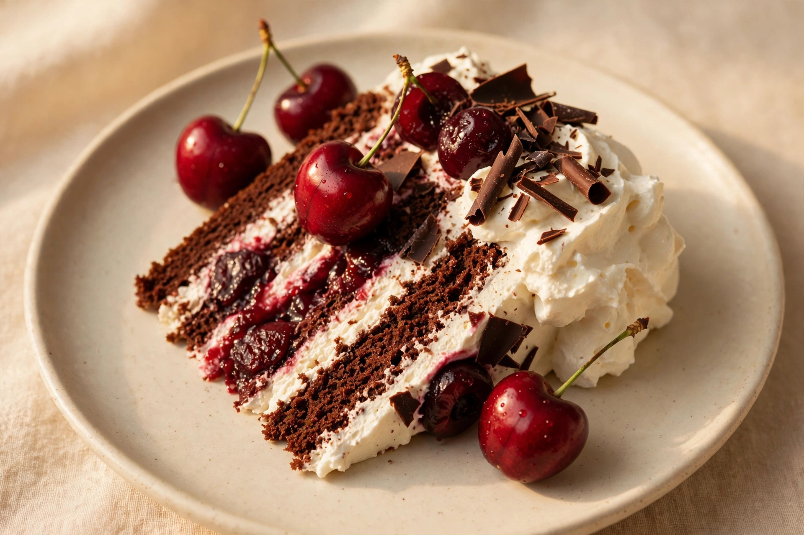
Klassiker mit saftigen Kirschen, Schoko & luftiger Sahne.
Demo-Bild — KI-generiert
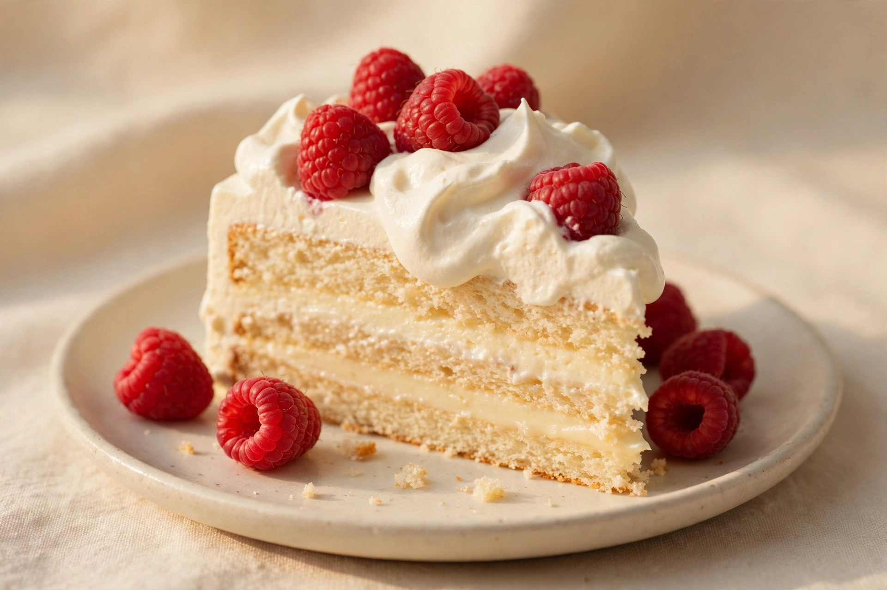
Zarte Kondensmilchböden mit fruchtig-frischen Himbeeren.
Demo-Bild — KI-generiert
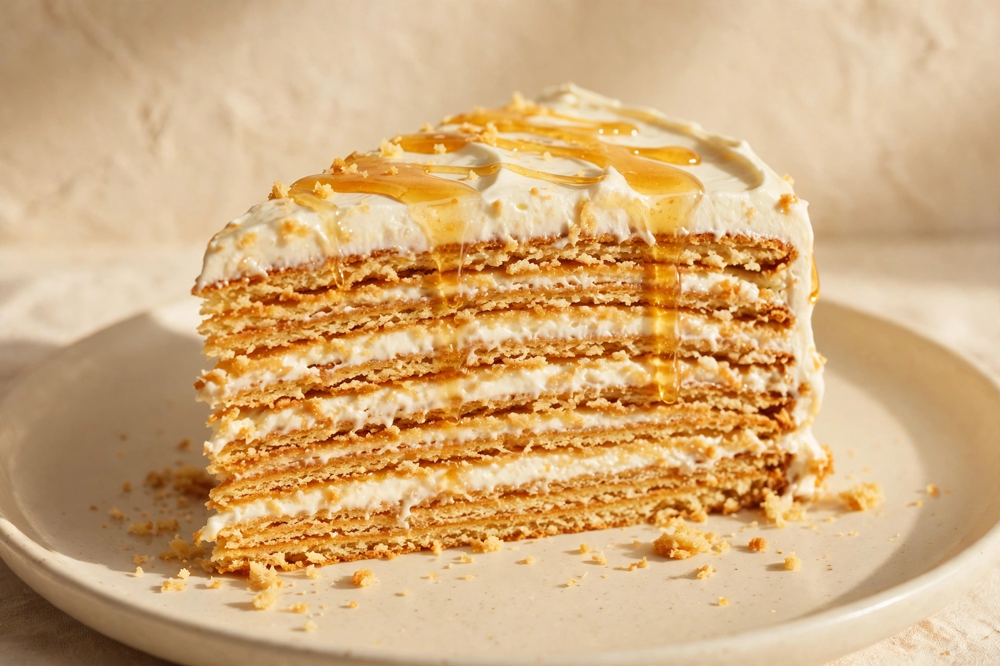
Viele feine Honigschichten mit dezenter Sauerrahmcreme.
Demo-Bild — KI-generiert
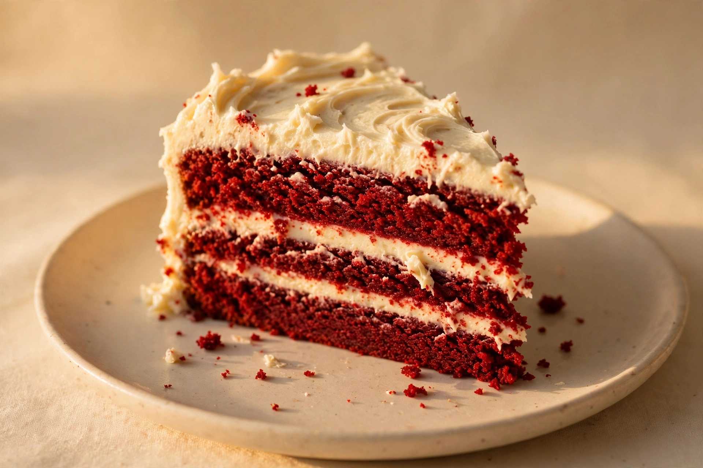
Samtroter Kakaobiskuit & samtiges Cream-Cheese-Frosting.
Demo-Bild — KI-generiert
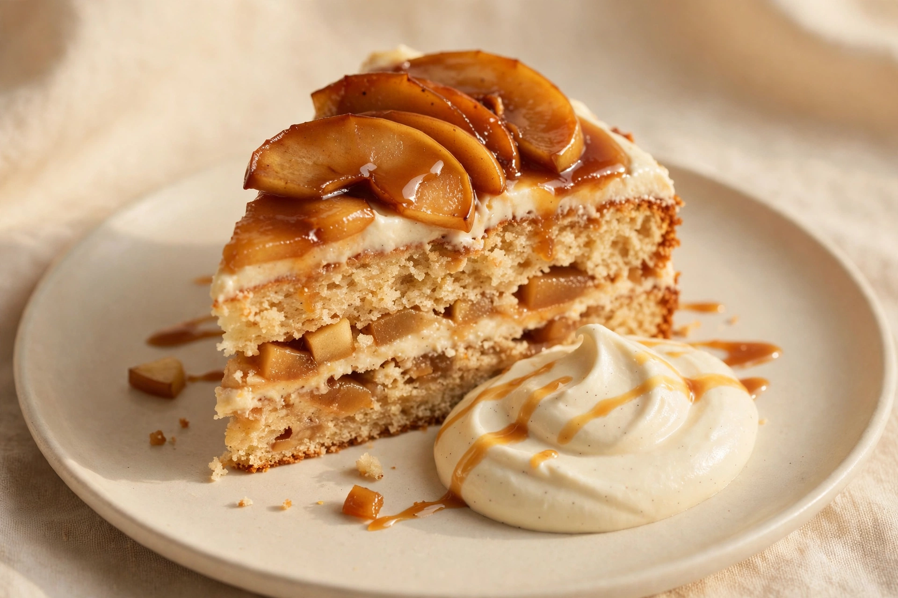
Aromatische Äpfel mit feiner Bourbon-Vanille & Zimtnote.
Demo-Bild — KI-generiert
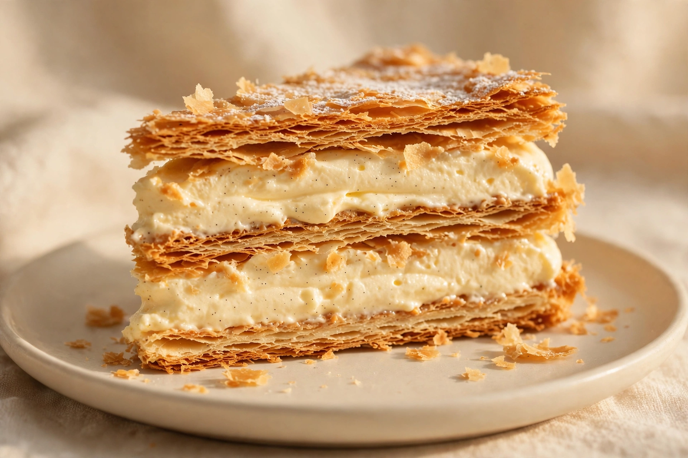
Blättriger Teig mit zartschmelzender Konditorcreme.
Demo-Bild — KI-generiert
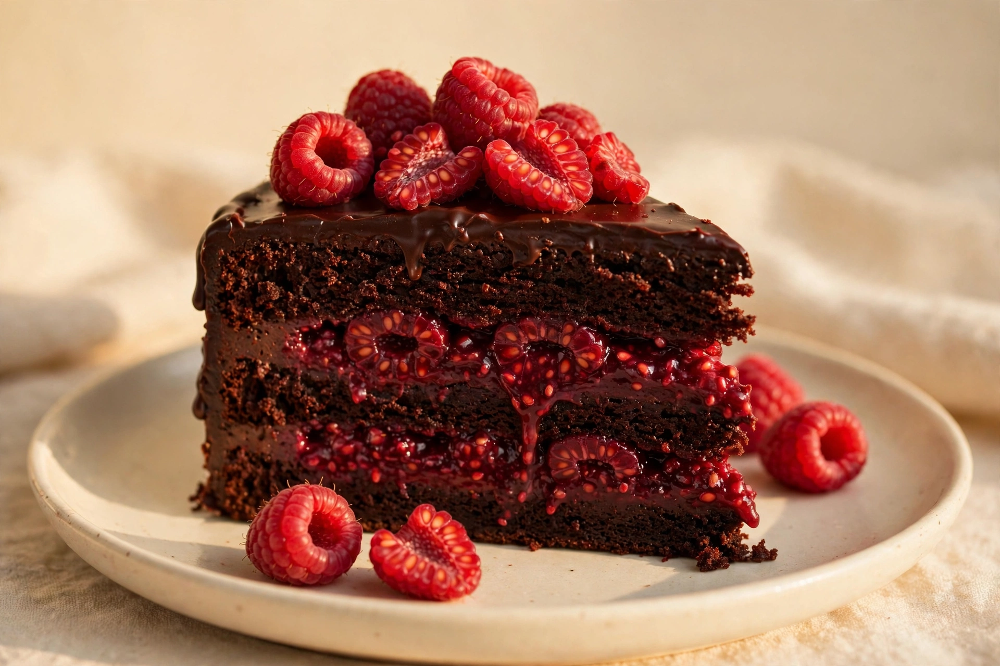
Harmonie aus dunkler Schokolade und frischer Himbeere.
Demo-Bild — KI-generiert
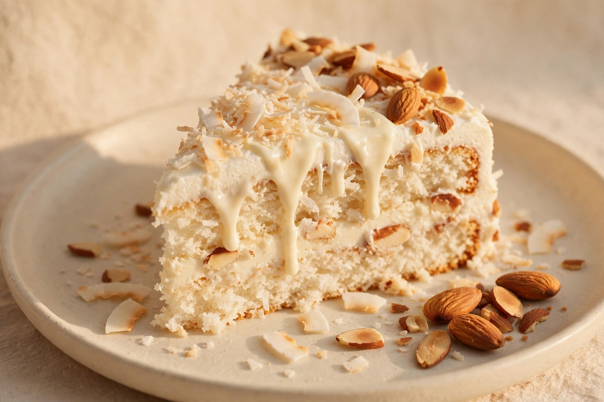
Feine Kokosflocken, weiße Schokolade & Mandelknusper.
Demo-Bild — KI-generiert
Bequem & zuverlässig
Ob für den runden Geburtstag, die Kaffeetafel am Sonntag oder die Firmenfeier: In 3 Schritten zur perfekten Torte.
Wählen Sie aus unseren 10 beliebten Rezepturen Ihren Favoriten und bestimmen Sie die Größe passend zu Ihrer Gästezahl.
Wählen Sie Ihr Wunschdatum und Ihren bequemen Abholzeitraum während der Öffnungszeiten [Öffnungszeiten].
Ihre Torte wartet transportsicher verpackt im Café in Gera auf Sie. Bereit für den perfekten Genussmoment!
Interaktiver WhatsApp-Bot für sekundenschnelle Kundenanfragen ohne Telefonunterbrechung in der Backstube. Demo — es wird keine echte Nachricht versendet.
Haben Sie Fragen zur Personenzahl, Deko-Wünschen oder Allergenen? Schreiben Sie uns direkt.
Starten Sie Ihren Sonntag mit handgemachten Köstlichkeiten: frische Brötchen, hausgemachte Aufstriche, feines Gebäck, herzhafte Platten und Kaffeespezialitäten. Gemütliche Atmosphäre mitten in Gera.
Uhrzeit: 9:00 – 11:00 Uhr
Reservierung: Erforderlich
Getränke: Frischer Kaffee
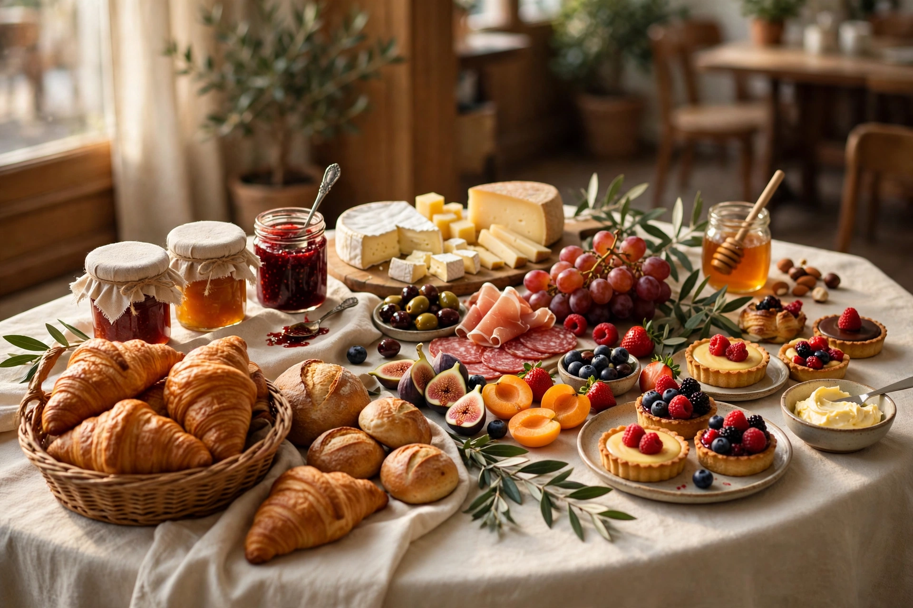
Demo-Bild — KI-generiert
Buffet-Platz reservieren →Ob runder Geburtstag, Taufe, Firmenjubiläum oder intime Feier: Unser gemütlicher Veranstaltungsraum bietet Platz für bis zu 30 Personen. Gerne bieten wir auch individuelles Kuchen-Catering für Ihre externe Feier.
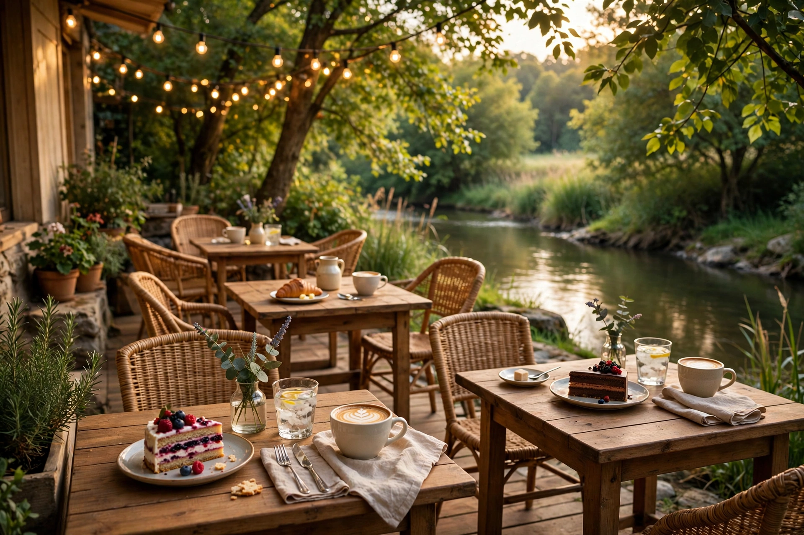
Demo-Bild — KI-generiert
Event oder Raum anfragen →Gera, Thüringen · [Adresse] · [Öffnungszeiten]